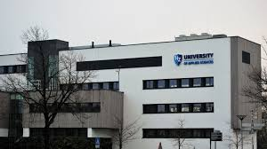

I believe the HBO-ICT program at HZ University of Applied Sciences and the ICT field are a great match for me. From a high-school after I started programming,
I came to realize that this is what I want to do. This program's combination of both teoretical and practical approach align perfectly with my learning style.
I believe that the best way to learn and excel in the ICT field is through real-world experience and application, and this program offers just that.
The dynamic and ever-evolving nature of the ICT industry excites me, and I'm eager to continuously learn and adapt in this field.Moreover, the ICT industry offers diverse
career opportunities, from software development to cybersecurity, ensuring I can explore various areas and discover my true calling. With the consistently high demand for
ICT professionals, I'm confident that this program will provide me with excellent job prospects and a chance to positively impact various industries.
In summary, I'm excited about the opportunities the HBO-ICT program and the ICT field present for me to pursue my passion for technology and make a meaningful
contribution to our digital future.

I aspire to become a software engineer because I am captivated by the limitless creative potential and problem-solving capabilities that coding and software development offer.
In this field, I see the opportunity to bring ideas to life, crafting solutions that can simplify complex processes, enhance user experiences, and contribute to the ever-evolving
technological landscape. The prospect of continually learning, staying at the forefront of innovation, and collaborating with like-minded individuals in a dynamic environment
deeply resonates with me. Being a software engineer allows me to blend my passion for technology with my desire to make a tangible impact on society, making it a career path
that aligns perfectly with my interests and ambitions.